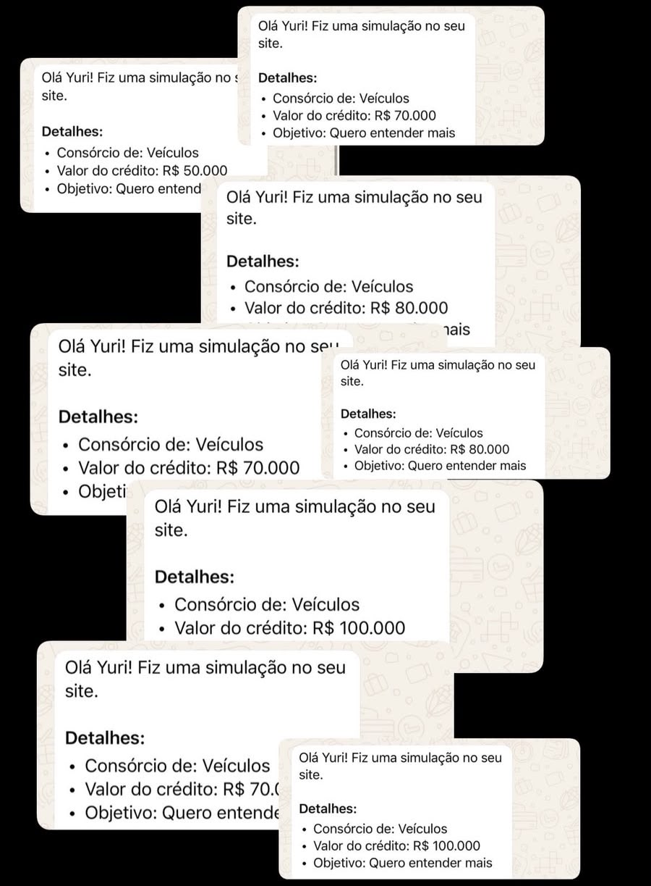
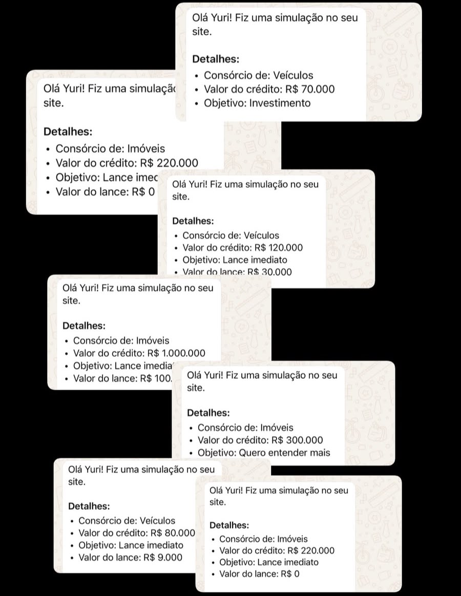
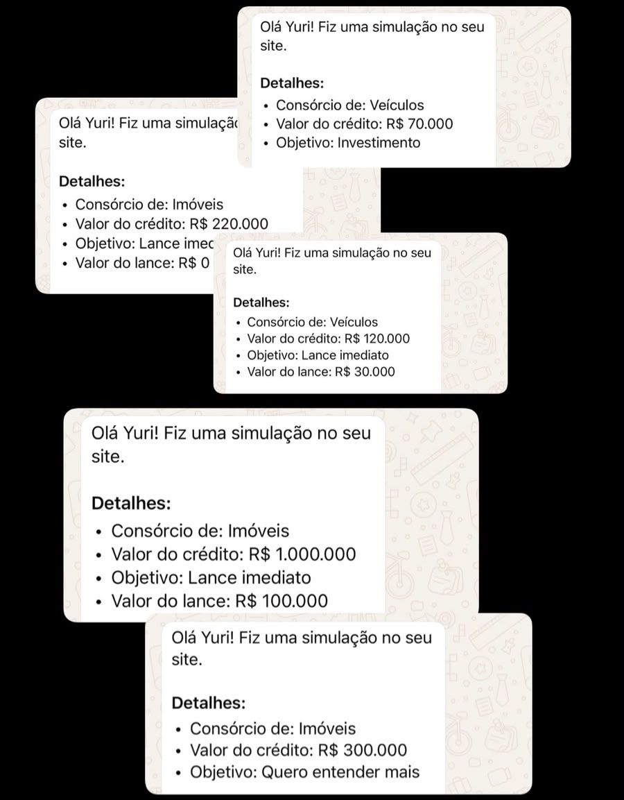

Você posta.
E ninguém chama.
Falta saber o que publicar, como apresentar seu trabalho e como transformar interesse em conversa.
Para consultores de consórcio iniciantes e experientes
Conseguir mais clientes pelo Instagram.
Atrair interessados sem depender de indicação.
Conduzir conversas e apresentar suas propostas com mais segurança.
Organizar sua rotina para buscar suas metas todos os meses.
VOCÊ SE RECONHECE AQUI?
Falta saber o que publicar, como apresentar seu trabalho e como transformar interesse em conversa.
A conversa vai direto para a parcela, antes mesmo de você entender o que aquela pessoa precisa.
Fica a dúvida: insistir, esperar ou mandar mais um “oi, tudo bem?”. Sem um próximo passo, a oportunidade esfria.
Você pode aprender um processo para cada uma dessas etapas.
Está começando no consórcio e precisa de direção para encontrar clientes e conduzir seus primeiros atendimentos.
Já atende clientes e quer organizar seu Instagram, suas conversas e o acompanhamento das propostas.
Você pode começar com o perfil que tem hoje. Não há exigência de um número mínimo de seguidores.
DOS MEUS VÍDEOS PARA O MEU WHATSAPP
Com meus vídeos no orgânico, atraí pessoas interessadas em consórcio sem investir em tráfego pago para essas conversas. Elas chegaram ao meu site, fizeram uma simulação e me chamaram no WhatsApp com um objetivo em mente.
Veja alguns dos pedidos que recebi:



Registros de pedidos de simulação recebidos por mim.
No Eleva Consórcio, compartilho como organizar seu Instagram, planejar conteúdo e conduzir o atendimento da primeira mensagem até a proposta. É esse caminho que quero ajudar você a construir.
Quero destravar minhas vendasSEM UM PROCESSO
MÉTODO ELEVA CONSÓRCIO
COMECE A CONSTRUIR SUA CARTEIRA
Ter um perfil é o começo. No Eleva Consórcio, você aprende a conectar conteúdo, prospecção, atendimento e acompanhamento em uma rotina de vendas.
Organize seu perfil e seus conteúdos para comunicar o que você faz e iniciar novas conversas.
Entenda objetivo, prazo e momento do cliente antes de apresentar uma proposta.
Aprenda a apresentar, lidar com dúvidas e retomar o contato com contexto.
Tudo que você precisa para destravar suas vendas.
Conteúdos, scripts e materiais de apoio em uma plataforma para acessar pelo navegador e pelo seu celular.
UM CAMINHO PARA VOCÊ SEGUIR
10 partes · 65 capítulos.
Abra cada parte e veja o que vai aprender.
CHEGA DE COMEÇAR DO ZERO
Tenha modelos para adaptar ao cliente e à etapa da conversa. Consulte enquanto organiza seus atendimentos.
Uma base para preparar sua abordagem, personalizar suas mensagens e sair do improviso.
Saiba o que perguntar antes de oferecer.
Organize sua apresentação ao cliente.
Revise sua proposta antes do próximo contato.
Pare de depender da inspiração para planejar seus temas.
Consulte os termos que aparecem na sua rotina.
INCLUÍDO NO SEU ACESSO
Além dos capítulos de Instagram do Eleva Consórcio, você recebe o módulo complementar “Instagram que vende consórcio”: um caminho para trabalhar seu perfil, conteúdo e conversas.
ELEVA CONSÓRCIO
De R$ 97,00 porR$ 37,90+ Bônus - Acesso Gratuito (trial) à Plataforma roiLead.
O sistema roiLead é uma plataforma que te entrega Leads (clientes) segmentados e qualificados para prospecção.
Você receberá o acesso pelo e-mail.
Quero entrar no Eleva ConsórcioANTES DE COMEÇAR
Sim. O material aborda desde a postura do vendedor e a busca por clientes até atendimento, proposta e acompanhamento. Você pode estudar na ordem e aplicar aos poucos.
É uma plataforma online com conteúdos organizados em partes e capítulos, scripts e materiais de apoio para consultar pelo celular ou computador. O módulo complementar também tem aulas em texto.
Após a confirmação do pagamento, você recebe por e-mail as instruções para acessar o Eleva Consórcio. Use o mesmo e-mail da compra no login.
Os capítulos de Instagram do Eleva Consórcio ficam disponíveis com o conteúdo principal após a aprovação da compra. O módulo complementar “Instagram que vende consórcio” é liberado após 7 dias.
Você pode começar estudando como organizar seu perfil, planejar conteúdo e prospectar. Não há exigência de um número mínimo de seguidores para usar o material.
A leitura dá direção; a aplicação faz parte do trabalho. Resultados dependem da sua execução, do mercado e dos clientes. O material não garante uma quantidade de vendas, seguidores ou renda.
DÊ DIREÇÃO À SUA PRÓXIMA CONVERSA
Comece identificando o que merece atenção na sua rotina.
Depois, conheça seu próximo passo com o Eleva Consórcio.
Diagnóstico rápido · 5 perguntas · Sem cadastro